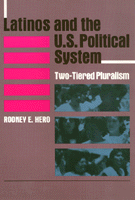

An analysis of American politics from the vantage point of the Latino political condition
An analysis of American politics from the vantage point of the Latino political condition


 An analysis of American politics from the vantage point of the Latino political condition
An analysis of American politics from the vantage point of the Latino political condition

|  |
Latinos and the U.S. Political SystemTwo-Tiered PluralismRodney E. Heropaper EAN: 978-0-87722-910-0 (ISBN: 0-87722-910-4) |
Ralph J. Bunche Award, American Political Science Association, 1993
"[A] comprehensive, and yet focussed view...[that] provides both theory and substance in a very well written and cogent manner. It could become the single leading text in the field of Hispanic Latino politics."
—F. Chris Garcia, University of New Mexico
Bringing together political science research on Latinos and an analysis of American politics from the vantage point of the Latino political condition, Rodney Hero presents a comprehensive discussion of contemporary Latino politics. The distinct and tenuous nature of Latino status in the U.S. has made it difficult to explain their unique status. This "uniqueness" stems from a variety of circumstances, including the differences among Mexican Americans, Puerto Ricans, and Cubans, and their ambivalent racial classification (white but not "Anglo," or nonwhite but not black).
Hero introduces the concept of "two-tiered pluralism," which describes the political situation for Latinos and other minorities in which equality is largely formal or procedural, but not substantive. He observes that this formal but marginalized inclusion exists for minorities in most facets of the political process. In his critical overview of American politics, Hero explores the major theoretical perspectives that have been used to understand Latino "cultural politics"; he contrasts the three largest Hispanic population in this country; and he considers major political activities and American institutions with specific reference to Latinos. This timely work addresses the politics of an increasingly important segment of the U.S. population and an area in which previous research has been scant.
Excerpt available at www.temple.edu/tempress
Tables and Figures
Preface
Acknowledgments
1. Introduction
2. Theoretical Perspectives and Latino Politics
3. The History and Socioeconomic Status of Latino Groups
4. Political Participation
5. Latinos and the National Government
6. Latinos and State Politics
7. The Elections of Federico Pe�a
8. Latinos and Urban Politics
9. Latinos and Public Policies
10. The Study of Latino Politics: Questions and Issues
11. Latinos and the Political System: Two-Tiered Pluralism
Notes
References
Index
Rodney E. Hero is Associate Professor in the Department of Political Science at the University of Colorado at Boulder.
Political Science and Public Policy
Latino/a Studies
© 2015 Temple University. All Rights Reserved. This page: http://www.temple.edu/tempress/titles/891_reg.html.